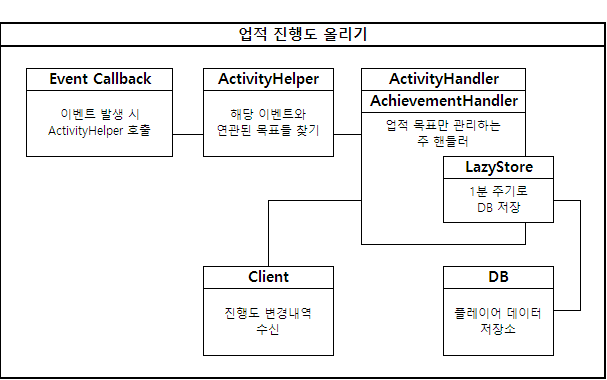
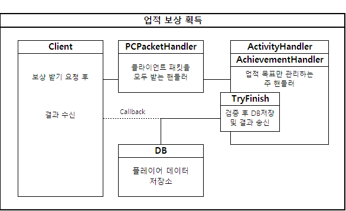
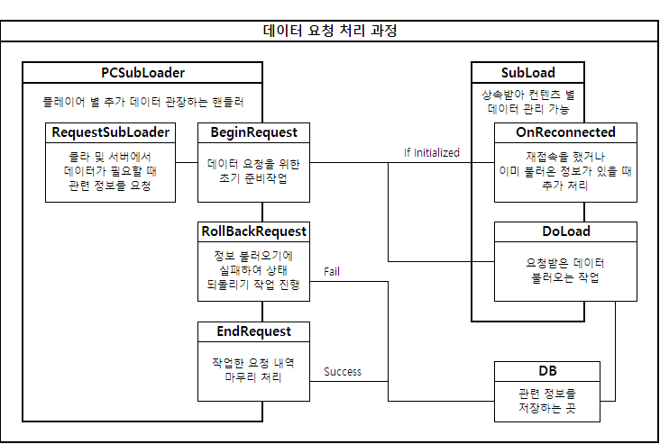
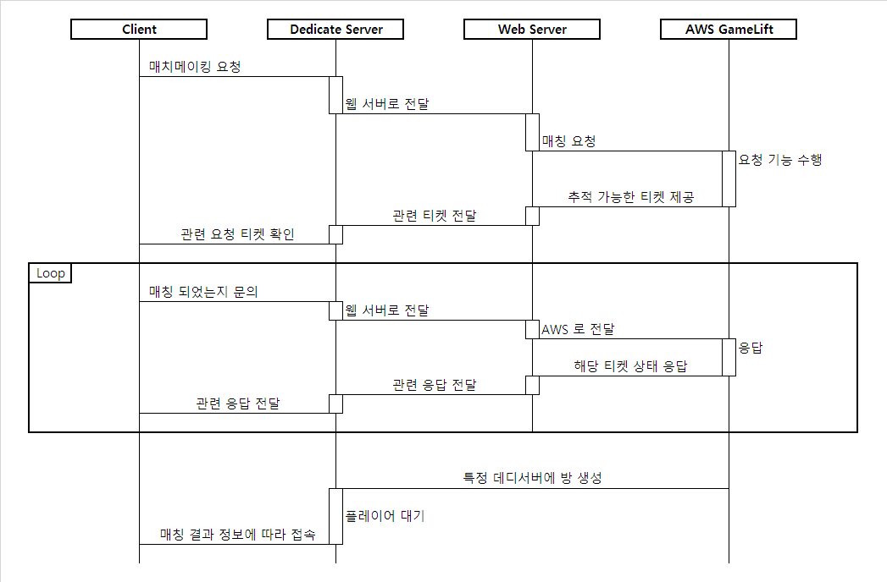
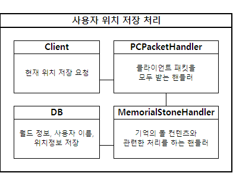
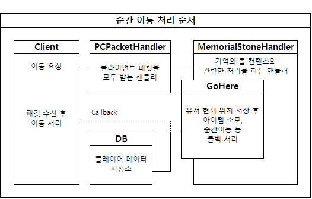

업적


특정 행동에 대한 업적 진행도를 올려주거나, 달성한 업적에 대해 보상을 지급하는 컨텐츠를 구현하였었습니다. DB부하를 줄이기 위해 LazyStore 라는 기능을 따로 구현하여 1분마다 관련 정보를 저장할 수 있도록 처리하였습니다.
SubLoader

처음 플레이어가 서버에 접속 할 때, 플레이어와 관련한 정보를 모두 다 불러와야 하는데, 처음부터 불필요한 정보까지 모두 불러올 필요가 없으므로, 데이터가 필요한 순간에 즉시 최초 한 번만 DB로 부터 정보를 받아오는 시스템을 구현하였었습니다. (우편, 이벤트 정보 등등)
AWS GameLift Flexmatch

클라이언트가 로비 서버에서 매치메이킹을 신청하면 이를 웹 서버로 전달하고, 웹 서버는 AWS에 기능을 요청하여 관련 유니크한 티켓을 받아 매치메이킹에 대한 정보를 중개하는 역할을 구현하였습니다. 매칭이 이루어 진다면 GameLift 내의 임의 데디서버에 방을 생성하여 주고, 연결에 필요한 정보들을 파싱하여 각 클라이언트에게 정보를
기타 구현 내용
기억의 돌


현재 위치를 기억하고, 기억의 돌을 소모하여 특정 위치로 이동하는 컨텐츠, 좌표를 즉시 DB에 저장하고, 아이템 사용 시 해당 저장 위치로 캐릭터 이동하는 기능.
칭호
칭호 지급 및 조건부 칭호 기능 구현, 칭호와 연동된 능력치 지급 기능 구현. 조건부 칭호의 경우, 매 시즌마다 초기화 되며 다음 시즌 시 랭킹 별 보상으로 지급.
출석 이벤트
매일 출석에 따라 스크립트에 입력된 보상 지급기능 구현 및 관련 정보 DB 기록.
누적 접속 보상 이벤트
접속한 시간에 비례하여 스크립트에 입력된 보상 지급 기능 구현 및 관련 정보 DB 기록. 타이머를 통해 보상을 받을 수 있는 접속 시간이 되면 클라에 알림 발송.
오늘의 활동
매일 해야 하는 과제를 완수하면 스크립트에 입력된 보상을 지급하는 컨텐츠. ActivityHandler를 상속받아 업적과 비슷한 프로세스로 처리. 진행했던 내용들은 다음날 모두 초기화 처리.
외형 변경권
캐릭터의 외모를 변경하는 티켓을 소모하여, 외형을 다시 만드는 기능.
특수 업적 (도전 과제)
특수한 상황에서 조건에 맞는 상황이 되어야, 진행도를 올려주는 컨텐츠. 샌드박스 형 조건 체크 기능 추가 구현 후, 기존 업적 시스템과 결합.